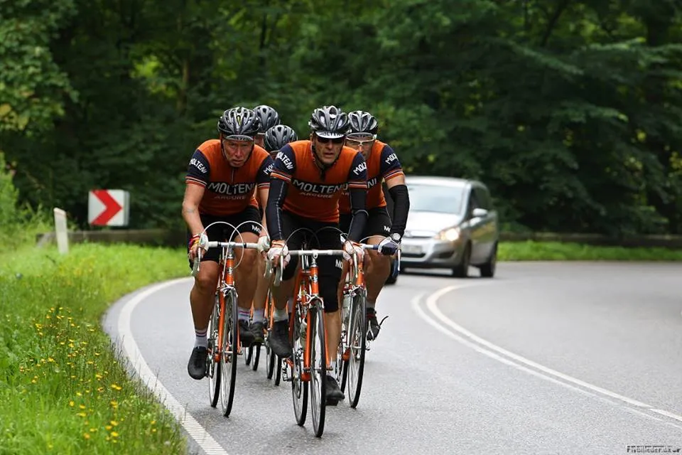
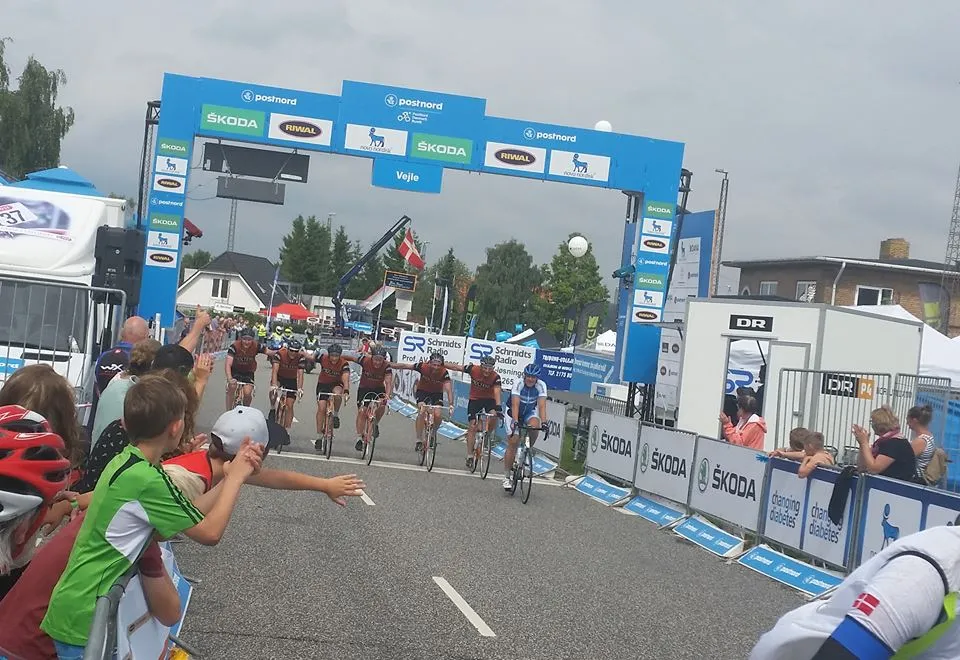
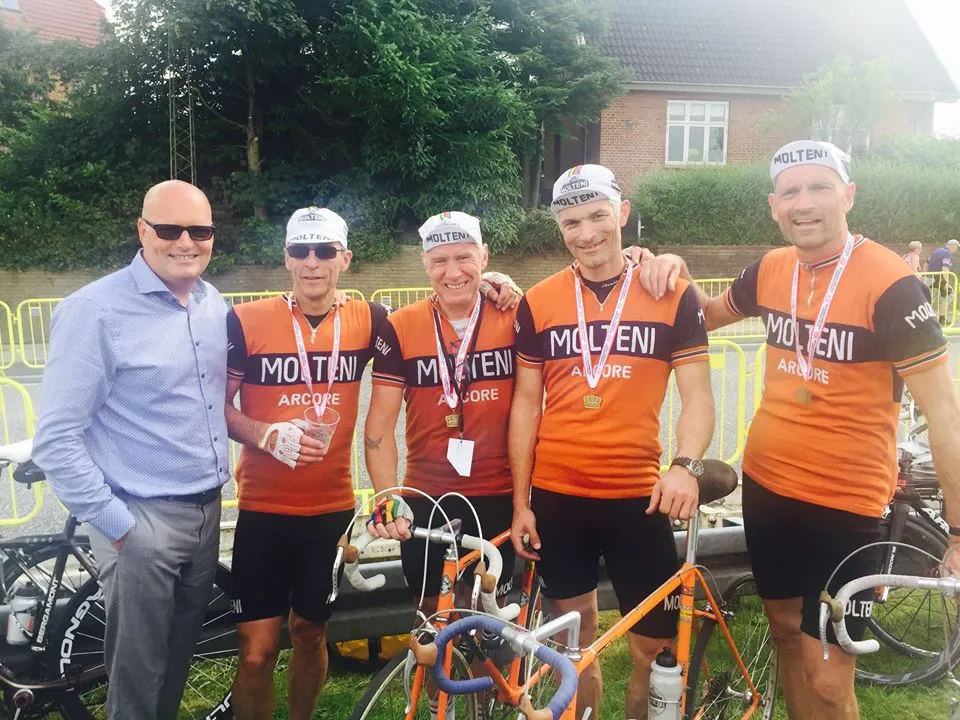
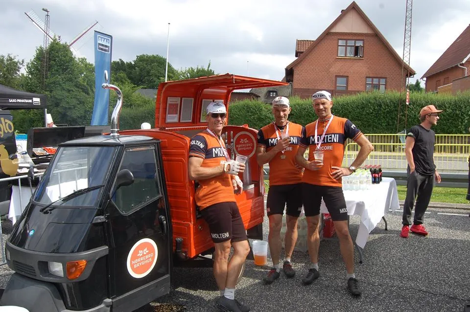

Løbsberetning: Kongeetapen 2016

Regn og blygrå skyer lå over Aabenraa, som var startby for Kongeetapen 2016. Squadra Molteni var mødt til start med 6 ryttere. Okay, måske kun 5,5 ryttere: Holdets unge løjtnant havde (igen) været ude og føjte natten før løbet. Men han kom til tiden, og var klar – sådan da!
Kaptajnen vinder skiltespurt
Vi kom godt fra start. Vi var kommet i et godt felt, og farten lå derudaf på omkring de 40 km/t. “Det Orange Tog” trak de første 5-10 km.
Ved de første bakker syd for Haderslev begyndte nogle af de hurtige carbon-fyre og stærke BMS-kvinder at trække. Fy for … de kører stærkt. Men vi hang på. Vi aftalte dog, at når feltet knækkede ville vi ikke forsøge at hænge på.
Ved første spurt lykkedes det dog Kaptajn Bjørnsteen, at overliste hele feltet og vinde den første mellemtidssprint efter 33 km ved Haderslev byskilt.
Det Orange Tog

Første alvorlige bakke var Skamlingsbanken mellem Haderslev og Kolding. Her knækkede feltet. Fra Kolding til Egtved måtte “Det Orange Tog” så igen træde i karakter.
Vi lagde os i hold-formation og sendte stærke Eigil Leegaard op i front. Inden længe trak “Det Orange Tog” et mellemstort felt. Vi nåede til depotet i Egtved efter 108 km – med 37 km/t i snit. I depotet fik vi tanket op – og Grane gav sig også lige tid til at give et live interview.
Den tiggende redaktør
Det var også i depotet i Egtved, at Squadra Molteni mødte redaktøren fra Altomcykling.dk, Uggi Kaldan. Uggi tiggede og bad, om han ikke nok måtte sidde med i slipstrømmen af Det Orange Tog. Det fik han naturligvis lov til.
Efter Egtved kom de barske bakker i en lind strøm: Bøgevadvej, Blue Horse, Tørskild Grusgrav, Ravningbakken og Østengård. Det var her i dette inferno af bakker, at løjtnant Kasper Sørensen måtte begynde at betale prisen for nattens udskejelser.
Helt galt gik det på Gl. Kongevej, hvor Kasper måtte ind og låne et toilet i en campingvogn… Men vi fik ham – et stykke tid senere – med igen.
Finalen
Nu ventede finalen: Jellingvej, Hopballe, Jerlev, Gl. Ribe Landevej/Koldingvej og Kiddesvej. Eigil og Grane havde diamanter i benene, var rastløse – og uviste tydelig utålmodighed over, at Kasper skulle af og sjatpisse (igen) på toppen af Hopballe. Kaptajnen formanede til samling.
Da vi nåede ind til Gl. Ribe Landevej/Koldingvej trykkede Grane den af. Det viste sig dog, at Grane kun lige skulle teste benene. Og jo, de var gode nok!: Så da Grane rammer Kiddesvej – på stor klinge! – lukker han op for alle sluser. Han flyver op i et tempo, som selv Valgren vil være misundelig på!
Formation Molteni

Grane venter dog på toppen af Kiddesvej – og da resten af Squadra Molteni er kommet op, bliver der kaldt til parallel formation – og vi kører over målstregen sammen.
Forza Molteni.
Tak for et godt løb til DCU.
En speciel stor tak til Nortec System A/S / Team Virtu Pro-Veloconcept for VIP arrangement, transportmulighed og venlig og god service.
Dementi: Riis køber ikke Squadra Molteni

Squadra Molteni er IKKE ved at blive opkøbt af eller ved at indgå sopnsoraftale med Seier-Riis. Squadra Molteni er sponsoreret af MOLTENI, pølsefabrik i en byen Acore, nordøst for Milano.
Bjarne Riis spurgte blot, om han ikke nok måtte tage nogle billeder af vores cykler og et billed sammen med os. Det fik han selvfølgelig lov til.
Forza Molteni
